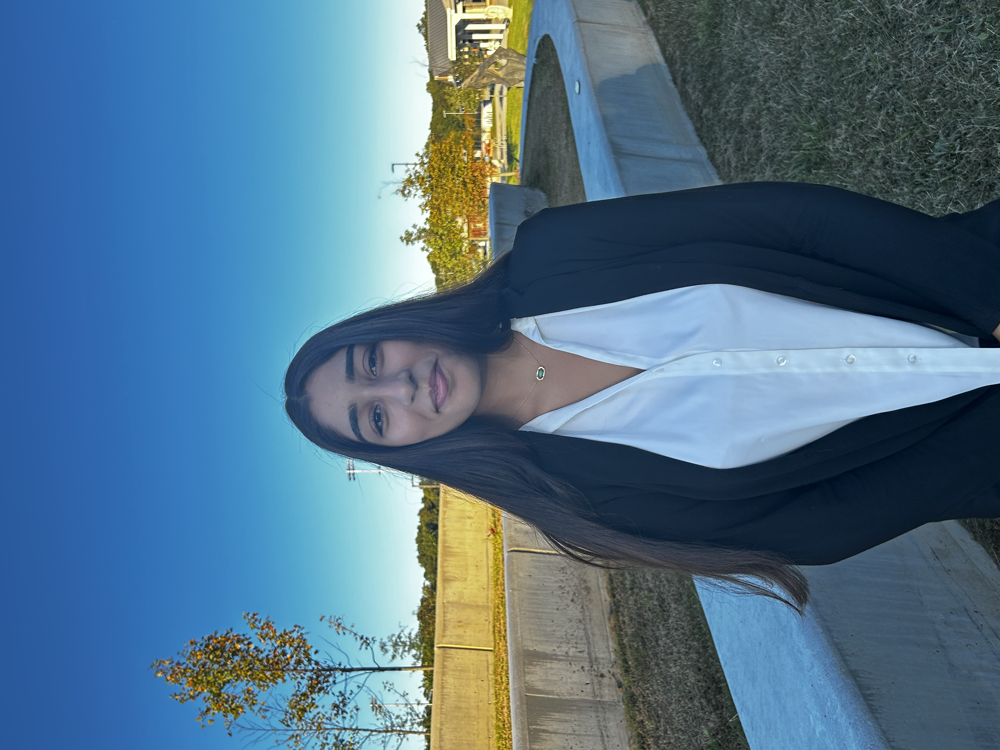

Secretariat

Disha Garg
Secretary-General
tucmunsecgen@gmail.com
Manudeep Chevuru
Director General
tucmundirectorgeneral@gmail.com

Meenakshi Ganesh
Director for General Assemblies
tucmundirectorgenassemblies@gmail.com

Sarina Ravji
Director for Specialized Agencies
tucmunspecialized@gmail.com

Shreya Sharma
Under Secretary-General for Crisis Simulations
tucmunusgcrisis@gmail.com

Anjana Satya Peddapurapu
Undersecretary General of External Communications
tucmunexcomm@gmail.com

Srinika Nagabandi
Undersecretary General of Logistics
tucmunusglogistics@gmail.com

Himasri Dasari
Director of Charitable Giving
tucmuncharity@gmail.com

Smirthe Rajesh
Director of Press and Publications
tucmunpressandpub@gmail.com

Jeev Delwari
Director of Technology
tucmundirectoroftech@gmail.com

Theophania Faheem
Director of Registration
tucmunregisteration@gmail.com